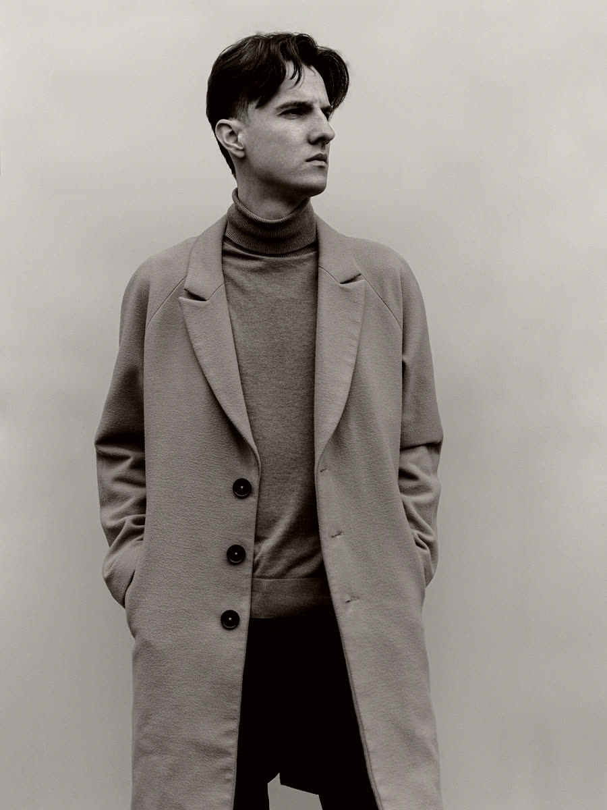
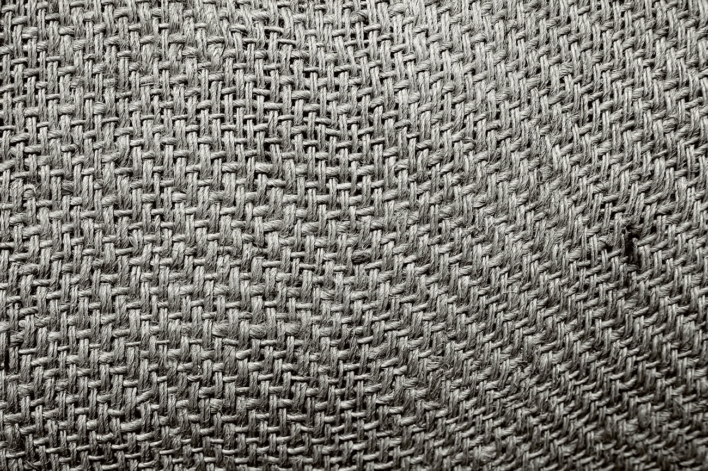
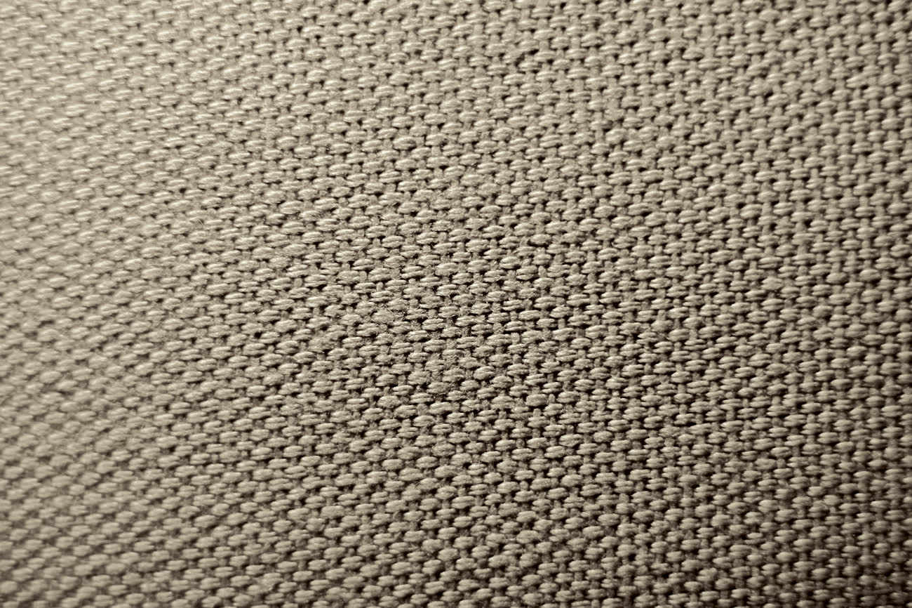
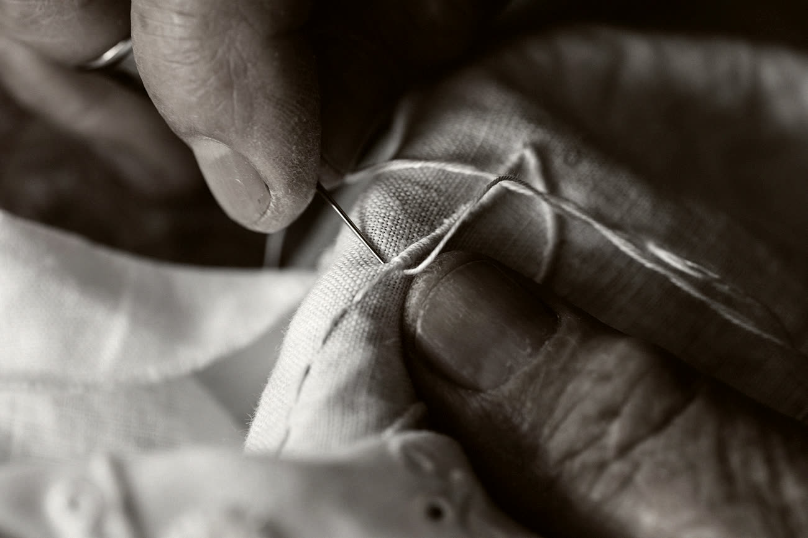
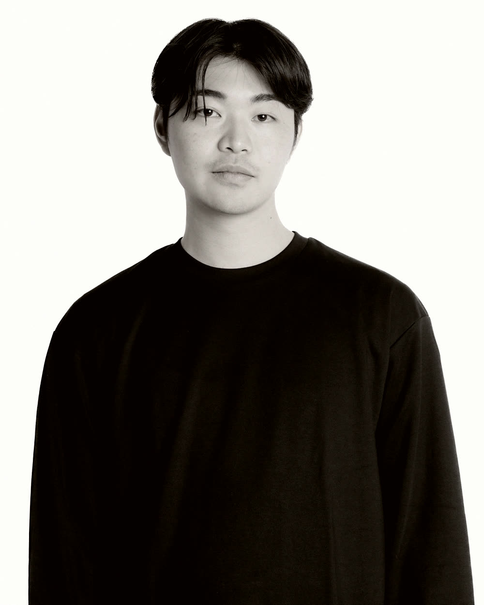
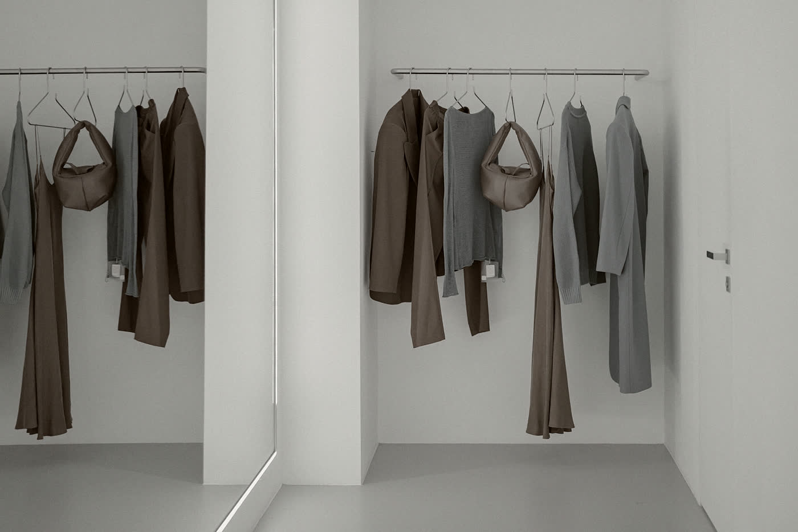
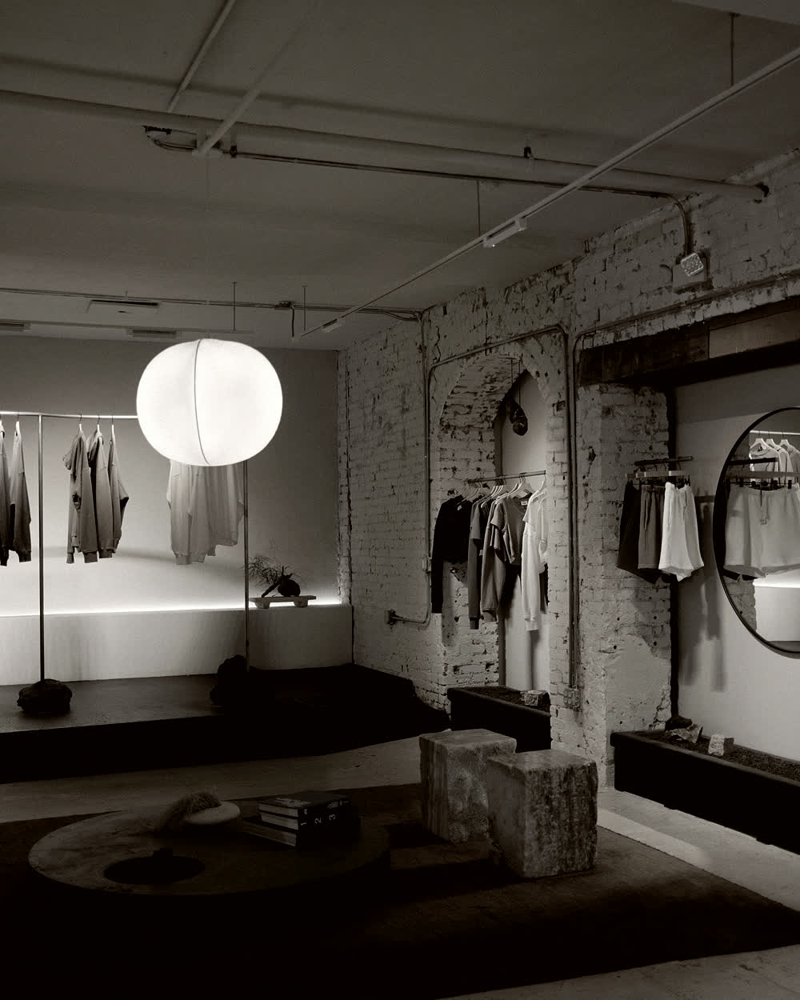

Color at the Edge
東京・蔵前のアパレルブランド KASANE ／ かさね
01 PHILOSOPHY 考え方
色は、 端にだけ 置いていく。
派手にやるつもりはない。でも、地味にやるつもりもない。
服を全部おなじ色にすると、形がよく見えてくる。肩の落ち方、袖の太さ、裾の重さ。色を引くと、そういうものが前に出る。
だから私たちは、色をひとつだけ残しています。襟の裏、袖口の内側、裾のステッチ。着ている本人にしか見えない場所に。
平安の装束に「襲の色目（かさねのいろめ）」という言い方があります。重ねた衣の、端にだけ色が覗く。千年前の人も、たぶん同じことを考えていた。
—— その一色を、私たちは洗朱と呼んでいます。
02 COLLECTION 2026 A/W
03 FABRIC 生地のこと
いい生地は、黙っている。
尾州と播州、二つの産地としか取引していません。理由は単純で、行って話せる距離だからです。年に四回、工場に行って、織り上がりを手で確かめてから発注しています。



- 産地
- 尾州（愛知・一宮）／ 播州（兵庫・西脇）
- 縫製
- 東京・蔵前の自社アトリエ、および岩手の協力工場 1 社
- 差し色
- 洗朱 #C9442B ／ 見返し・袖見返し・裾ステッチのみ
- 修理
- 購入後 5 年間、袖口と裾は実費のみで受け付けます
04 GREETINGS 代表より

どうも、芦田です。
前職はアパレルの生産管理で、十年やりました。工場に行っては「この色、もう少し落とせませんか」と言い続けて、だいたい嫌がられていました。
2016年に蔵前ではじめたときは、二人でした。ミシンが一台と、裁ち台が一台。いまは七人になって、ミシンは四台に増えました。増えたのは、それくらいです。
うちの服は、たぶん一見地味です。店頭で手に取っても、ほかと何が違うのかわからないと思う。袖口をめくったときにだけ、洗朱が出てきます。
その一瞬のために、あとは全部黙らせている。そういう作り方をしています。

05 CONTACT お問い合わせ
蔵前に、店があります。
- 店舗
- KASANE 蔵前
〒111-0051 東京都台東区蔵前 2-14-6 - 営業
- 12:00 – 19:00 ／ 水曜定休
- 連絡
- hello@kasane.example
03-0000-0000
試着は予約なしで大丈夫です。生地の相談だけでも来てください。
